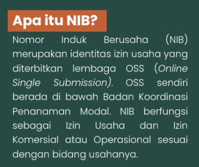
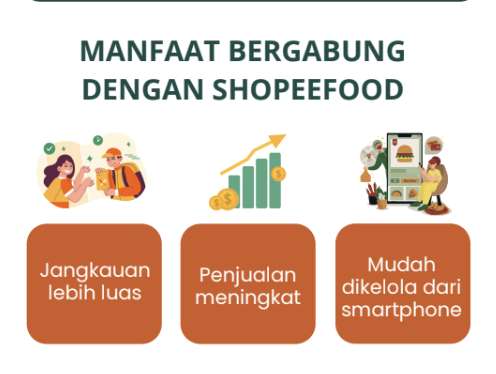
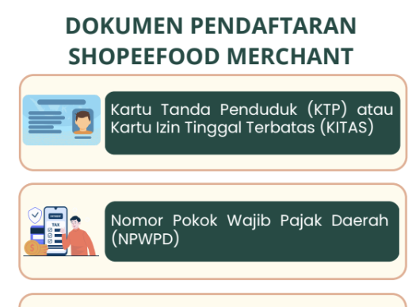

article
Leaflet
Panduan UMKM Berkembang
Leaflet ini berisi informasi mengenai pentingnya Nomor Induk Berusaha (NIB) sebagai legalitas usaha serta panduan bergabung dengan ShopeeFood sebagai salah satu upaya digitalisasi UMKM. Materi disusun secara ringkas agar mudah dipahami dan dapat menjadi referensi bagi pelaku UMKM dalam mengembangkan usahanya.

Pratinjau Dokumen
photo_library Dokumentasi Kegiatan
Galeri foto kegiatan dan implementasi program di lapangan.


